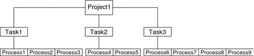

Previous
Previous
Task Identifiers
Each successful login into a project creates a new task that contains the login process. The task is a process collective that represents a set of work over time. A task can also be viewed as a workload component. Each task is automatically assigned a task ID.
Each process is a member of one task, and each task is associated with one project.
Figure 2-1 Project and Task TreeAll operations on process groups, such as signal delivery, are also supported on tasks. You can also bind a task to a processor set and set a scheduling priority and class for a task, which modifies all current and subsequent processes in the task.
A task is created whenever a project is joined. The following actions, commands, and functions create tasks:
login
cron
newtask
setproject
su
You can create a finalized task by using one of the following methods. All further attempts to create new tasks will fail.
You can use the newtask command with the -F option.
You can set the task.final attribute on a project in the project naming service database. All tasks created in that project by setproject have the TASK_FINAL flag.
For more information, see the login(1), newtask(1), cron(1M), su(1M), and setproject(3PROJECT) man pages.
The extended accounting facility can provide accounting data for processes. The data is aggregated at the task level.
Commands Used With Projects and Tasks
The commands that are shown in the following table provide the primary administrative interface to the project and task facilities.
Man Page Reference | Description |
|---|---|
projects(1) | Displays project memberships for users. Lists projects from project database. Prints information on given projects. If no project names are supplied, information is displayed for all projects. Use the projects command with the -l option to print verbose output. |
newtask(1) | Executes the user's default shell or specified command, placing the execution command in a new task that is owned by the specified project. newtask can also be used to change the task and the project binding for a running process. Use with the -F option to create a finalized task. |
passmgmt(1M) | Updates information in the password files. Use with the -K key=value option to add to user attributes or replace user attributes in local files. |
projadd(1M) | Adds a new project entry to the /etc/project file. The projadd command creates a project entry only on the local system. projadd cannot change information that is supplied by the network naming service. Can be used to edit project files other than the default file, /etc/project. Provides syntax checking for project file. Validates and edits project attributes. Supports scaled values. |
projmod(1M) | Modifies information for a project on the local system. projmod cannot change information that is supplied by the network naming service. However, the command does verify the uniqueness of the project name and project ID against the external naming service. Can be used to edit project files other than the default file, /etc/project. Provides syntax checking for project file. Validates and edits project attributes. Can be used to add a new attribute, add values to an attribute, or remove an attribute. Supports scaled values. Can be used with the -A option to apply the resource control values found in the project database to the active project. Existing values that do not match the values defined in the project file are removed. |
projdel(1M) | Deletes a project from the local system. projdel cannot change information that is supplied by the network naming service. |
useradd(1M) | Adds default project definitions to the local files. Use with the -K key=value option to add or replace user attributes. |
userdel(1M) | Deletes a user's account from the local file. |
usermod(1M) | Modifies a user's login information on the system. Use with the -K key=value option to add or replace user attributes. |